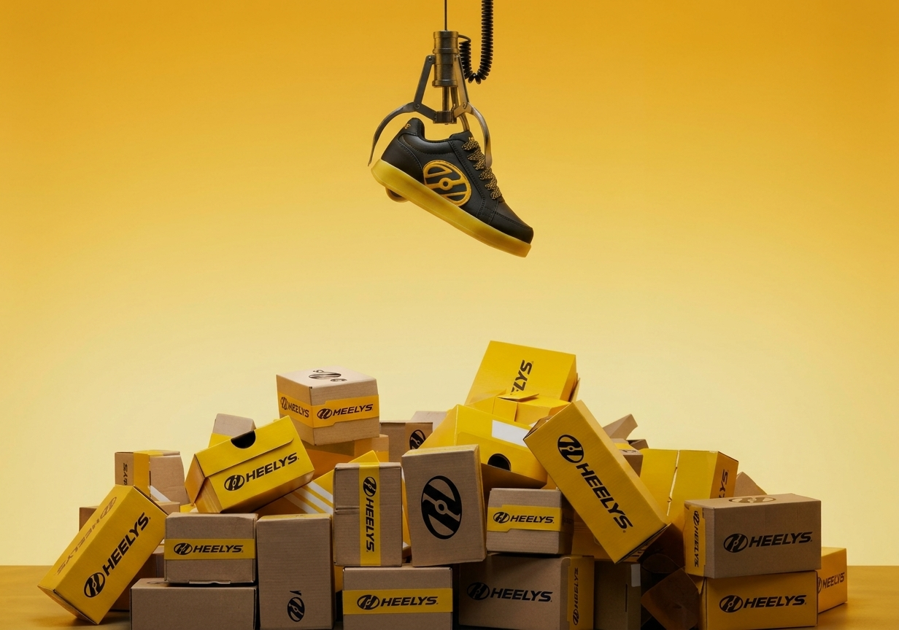
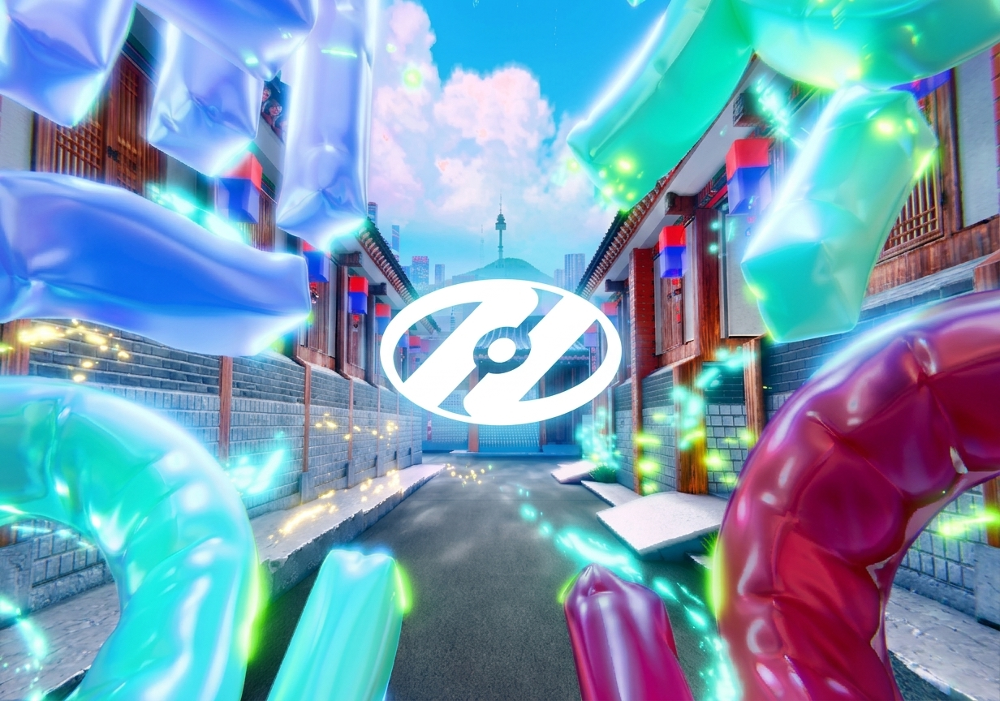
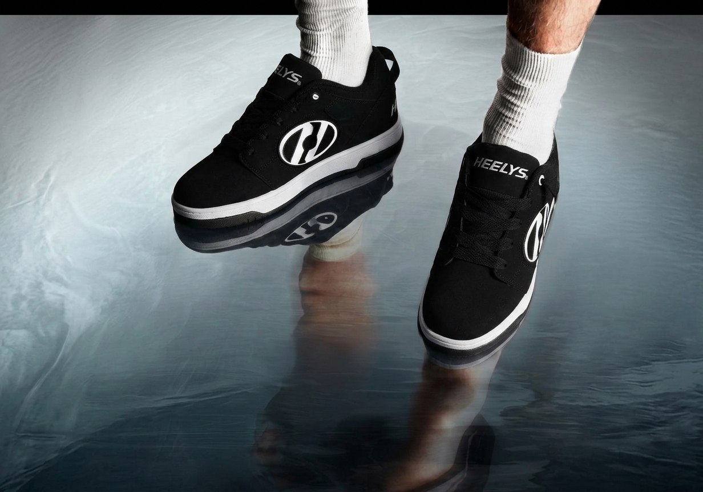
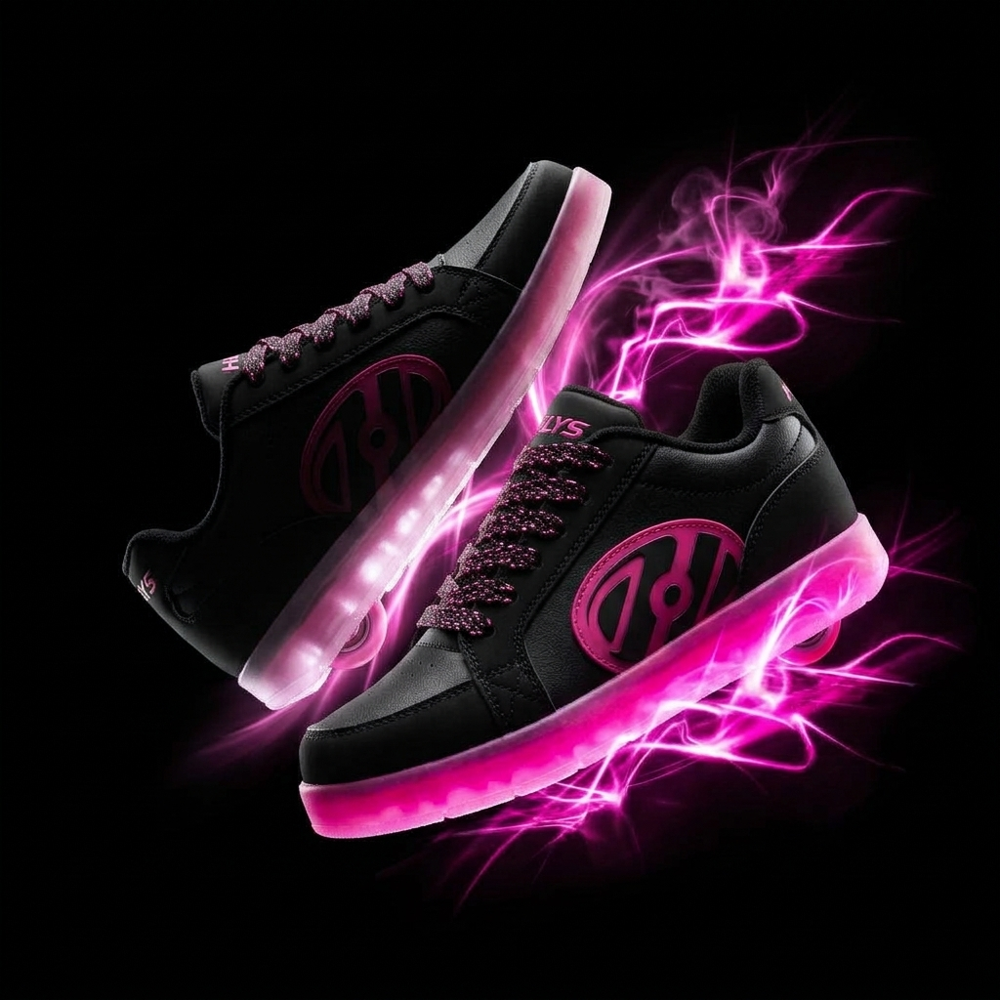
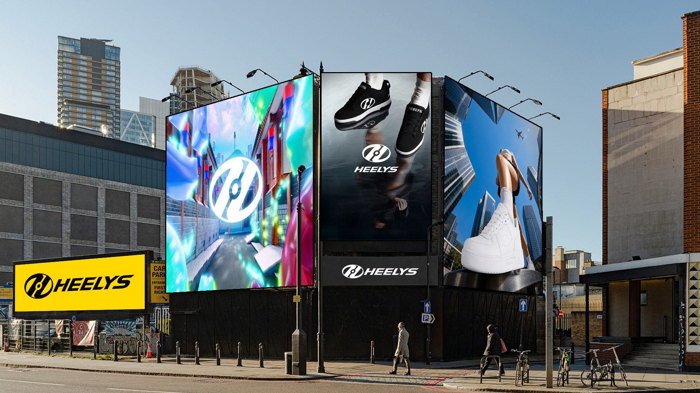

Process highlights
Work overview
Timeline
Gen - Marzo 2024
Disciplines
Product Design
UX/UI Design
Visual Design
Web Design
Responsibilities
UX Audit & Competitive Analysis
User Flows & Information Architecture
Wireframing & High-Fidelity Design
Design System & Components (Figma)
Prototyping & Interaction Design
Tools
Figma (Design System / Prototype
FigJam (User Flows & Ideation)
Framer (Optional Prototyping)
Contesto / Brief
Project Introduction
Il progetto nasce con l'obiettivo di rinnovare la comunicazione di Heelys, riportando al centro l'identità del brand e il suo legame con la cultura street. La sfida è riposizionare le iconiche scarpe con rotelle come espressione di uno stile di vita dinamico, creativo e individuale, capace di parlare a una nuova generazione. La comunicazione punta a valorizzare movimento, libertà ed espressione personale.
Idea
Creative Concept
L’opportunità potrebbe essere quella del posizionarsi come oggetto, più che scarpa che incarna un posizionamento sociale, che rispecchia uno stile e una forza comunicativa legata al suo prodotto, così attirando il vasto target che naviga sulle piattaforme social.
Heelys crea l’opportunità di connettere un capo d’abbigliamento che è anche una prestazione, contemporaneamente quindi definisce lo stile attraverso come ci si veste e attraverso cosa fa il prodotto.
Heelys trasforma ogni passo in un’esperienza dinamica, unendo camminata e movimento su ruote.
Un modo diverso di vivere lo spazio urbano, lasciando libertà di movimento e spontaneità a ogni percorso.
Un prodotto che unisce funzionalità e stile, permettendo a ciascuno di esprimere la propria individualità
La combinazione tra scarpa e ruota offre un’esperienza versatile, capace di adattarsi a diversi momenti della giornata.
Heelys si inserisce nella cultura street, avvicinando movimento, creatività e socialità.
Abbiamo bisogno di attirare attenzione
in tempo limitato, e di un mezzo più
“veloce” per arrivare al traguardo del
successo sui social.
È il momento di aggredire i trend, e Heelys ti vende uno stile, un approccio di vita, un mood, un movimento sociale, più che una semplice scarpa.
Tipografia - Palette
Visual System
Subheader / Caption font
Space Grotesk
1234567890
AaBbCcDdEeFfGgHhIiJjKkLlMmNn
OoPpQqRrSsTtUuVvWwXxYyZz
Headline font
Helvetica Neue
Family
1234567890
AaBbCcDdEeFfGgHhIiJjKkLlMmNn
OoPpQqRrSsTtUuVvWwXxYyZz
Sviluppo
Campaign Development
La direzione creativa si sviluppa attraverso un linguaggio visivo contemporaneo, ispirato alla cultura skate, allo streetwear e all'estetica urban. Una palette essenziale, caratterizzata da contrasti tra bianco, nero e accenti lime, si combina con una tipografia bold e composizioni dinamiche. L'obiettivo è costruire un'identità riconoscibile e coerente, capace di trasmettere energia e movimento attraverso ogni punto di contatto.





Digital advertising
Social Media Advertising
La campagna social traduce il concept creativo in una serie di contenuti visivi pensati per catturare l'attenzione e coinvolgere il pubblico. Fotografie lifestyle, headline d'impatto e composizioni grafiche dinamiche valorizzano il prodotto e il suo potenziale espressivo. I contenuti sono progettati per Instagram e TikTok, attraverso formati verticali, post e stories, creando una comunicazione immediata, riconoscibile e coerente con il mondo Heelys.
Billboard